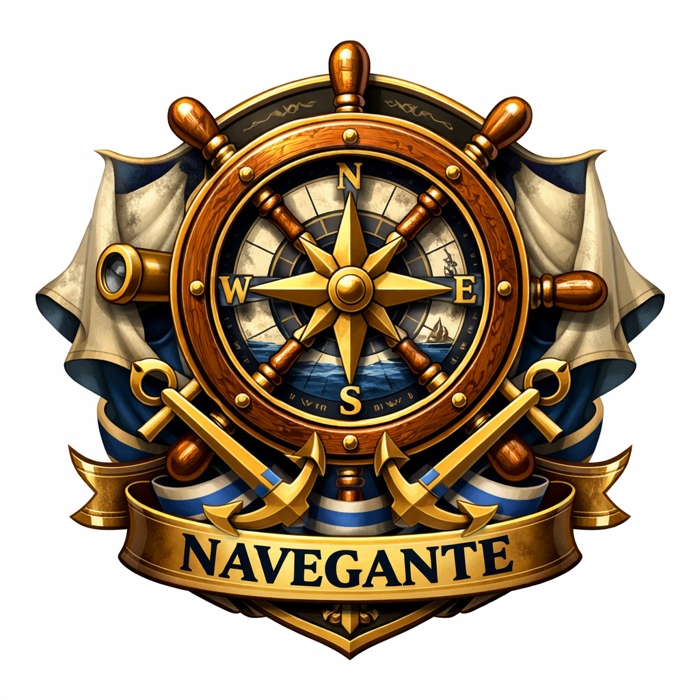
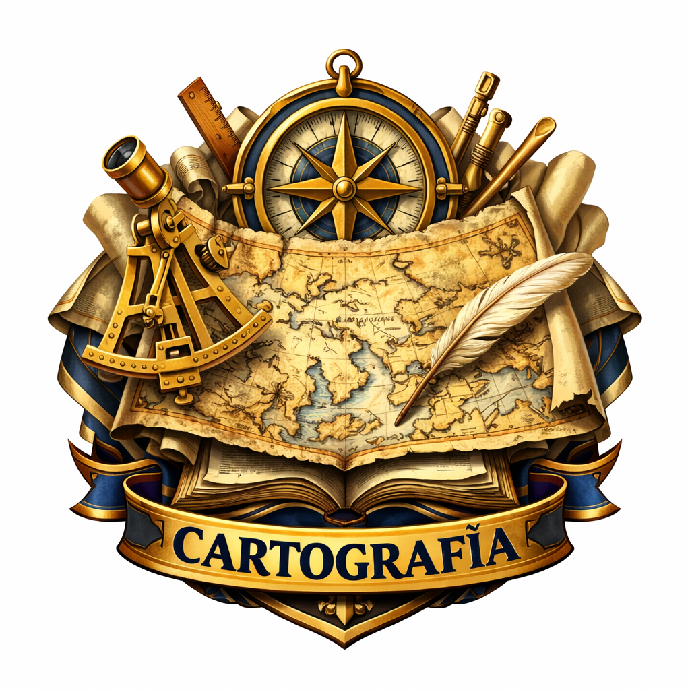
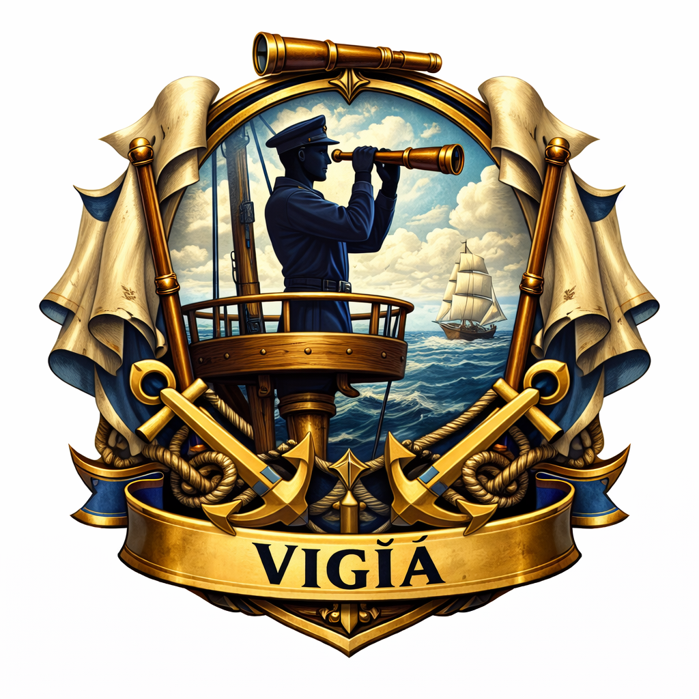
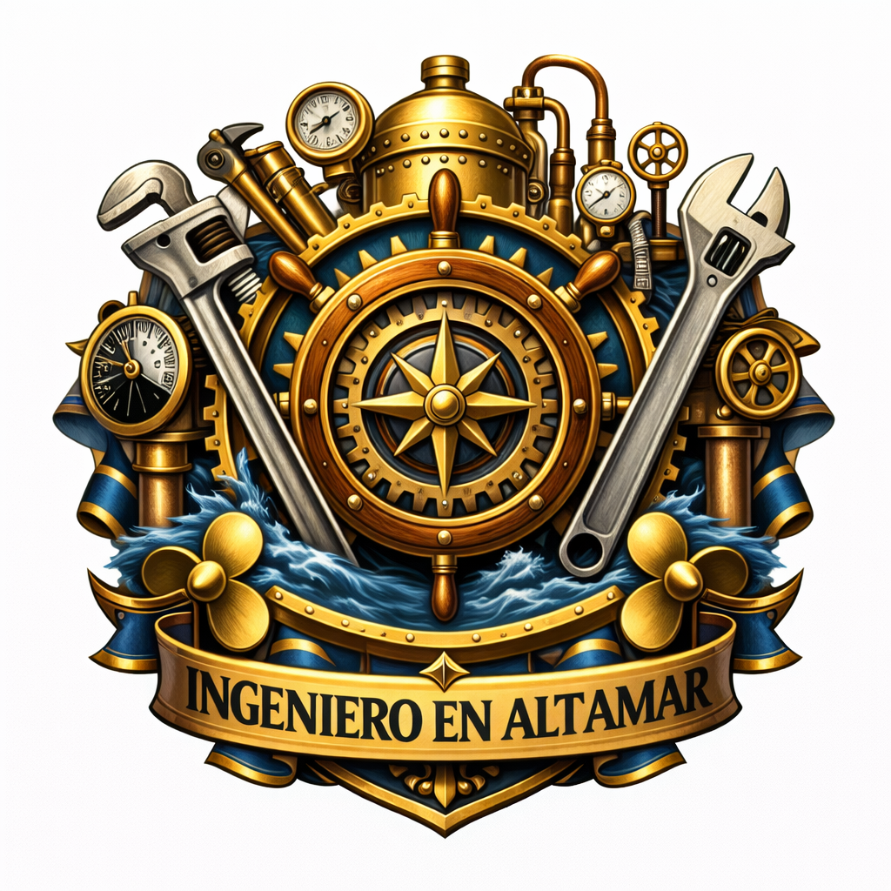

Equipaje
Antes de centrarnos en la Bitácora del Navegante, es preciso que hablemos de la evaluación diagnóstica. Con el objetivo de indagar en los saberes previos sobre las experiencias en entornos virtuales, en la sección Puente de Mando, y en la pestaña Equipaje, deberán completar un foro. Esta participación es obligatoria. Las preguntas que orientan la participación son:
- ¿Tienes experiencias previas de estudios a distancia, como estudiante o como profesor?
- ¿Haz diseñado entornos virtuales? ¿En qué plataforma moodle, classroom etc?
Tu voz es fundamental para construir juntos esta aventura educativa.
Todas sus experiencias y sus aprendizajes previos constituyen el equipaje con el cual van a zarpar en esta aventura pedagógica en altamar.
La Bitácora
La Bitácora de un navegante es el registro detallado de todos los eventos, observaciones y reflexiones que ocurren durante un viaje marítimo.
Estimados navegantes, una vez que hayan finalizado la autoevaluación en este punto de la travesía, los invitamos a registrar en sus Bitácoras Digitales las decisiones que permitan la mejora de sus aulas virtuales.
Cada uno conformará su Diario a Bordo. Mediante esta estrategia, pretendemos que puedan recopilar las evidencias que irán produciendo a lo largo de las travesías para registrar y visualizar las competencias adquiridas durante su propio proceso de aprendizaje a lo largo de este Postítulo.
La elaboración de la Bitácora del Navegante es personal, dependerá de la creatividad y competencias digitales de cada uno. Se valora la inclusión de formatos multimodales de evidencia más allá del texto: videos, audio/podcast, infografías, mapas mentales, presentaciones interactivas etc. Todos estos elementos contribuyen decisivamente a la inclusión, facilitando el acceso y la asimilación del contenido a cada estudiante.
Es importante aclarar que, la Bitácora del Navegante, se irá produciendo durante el recorrido de la Actualización Académica, por lo tanto, la evaluación está enmarcada en la evaluación formativa. “El objetivo fundamental de este tipo de evaluación es determinar el grado de adquisición de los aprendizajes para ayudar orientar y prevenir tanto al profesor como a los alumnos, aprendizajes no aprehendidos o aprehendidos erróneamente” (Fernadez Marcha,2010, p. 20)
Objetivos de evaluación para esta travesía
Por tal motivo, exponemos el objetivo de evaluación para esta travesía:
Tratados de Altamar: Normativas para la EaD
✅ Diseñar en el Diario a Bordoun mapa conceptual o infografía original que sintetice la estructura jerárquica del marco normativo (leyes, resoluciones, acuerdos) que rige la Educación Híbrida en Formación Docente, y añadir una entrada reflexiva que identifique y analice críticamente la principal implicación pedagógica de una de estas normas para su futura práctica docente. En el Diario a Bordo podrán compartir la imagen o el link para acceder al mapa conceptual.
Zona de Travesías: Creación de contenidos digitales y DUA
✅ Desarrollar un mínimo de tres tipos diferentes de contenidos digitales (ej., un texto académico enriquecido, un diseño de actividad interactiva, y una infografía/video explicativo) que sean pedagógicamente pertinentes para un objetivo de aprendizaje específico y que demuestren un nivel técnico adecuado en su elaboración. En el Diario a Bordo compartirán estas producciones
Criterios a evaluar
Estimados navegantes, los animamos a que de manera ordenada, sistemática y cada uno a su ritmo trabaje en la construcción de su Bitácora de Naveante. Tengan en cuenta que se evaluará:
- ✅ Aplicación del marco normativo vigente (Misiones/Nacional) para estructurar legalmente un diseño híbrido, y de gestionar los contenidos y la interacción digital utilizando licencias abiertas y normas de Netiqueta.
- ✅ Evaluación crítica de recursos digitales, seleccionando y justificando la herramienta más pertinente (por usabilidad, accesibilidad y sostenibilidad) para una fase específica del proceso de enseñanza-aprendizaje (planificación, mediación o evaluación)
- ✅ Producción y diseño de contenidos digitales originales (no solo digitalizados) y aplicación de criterios didácticos, comunicacionales y de accesibilidad/inclusión en su maquetado para entornos híbridos.
- ✅ Diseño y maquetado de la estructura de un aula virtual coherente, integrando objetivos, contenidos, estrategias de evaluación e interacción que respondan a una modalidad específica de formación en línea (ej. Taller o PBL).
Resultados de aprendizaje esperados
Presentamos los resultados de aprendizaje esperados para cada travesía
Tratados de Altamar: Normativas de la EaD
- ✅ Reconoce la normativa vigente de la EaD en relación a propiedad intelectual, derechos de autor, acuerdos de convivencia digital.
- ✅ Describe la estructura y el alcance de la normativa vigente y destaca los artículos relevantes para la EaD.
- ✅ Aplica los puntos artículos seleccionados como relevantes y diseña los acuerdos de convivencia digital para tu propia aula virtual.
Zona de travesías: Creación de contenidos digitales y DUA
- ✅ Gestiona un repositorio digital de fuentes de información usando herramientas diversas para la colaboración y la edición simultánea de documentos.
- ✅ Selecciona y justifica la aplicación de estrategias interactivas digitales basado en el diagnóstico de las necesidades de un grupo de estudiantes y los principios de accesibilidad.
- ✅ Produce documentos académicos empleando múltiples formatos digitales (texto, audio, videos, infografía, etc.), garantizando la accesibilidad del contenido, respetando las normas de propiedad intelectual y las licencias de uso.
Retroalimentación del Diario a Bordo
Finalmente, informamos el modo y los tiempos en que se realizará la retroalimentación del Diario a Bordo.
Anijovich y Cappelletti (2020) nos ofrecen diferentes modos de retroalimentación: formular preguntas, describir el trabajo del estudiante, valorar y celebrar los avances y logros del estudiante, brindar sugerencias, ofrecer andamiajes, favorecer la retroalimentación entre pares. En el EVA, se definió una pestaña exclusiva, GPS Náutico, que orientará los procesos de autoevaluación y autorreflexión útiles y necesarios para la elaboración del Diario a Bordo del Postítulo (Bitácora del Navegantel). Ahora bien, para el presente Plan de Evaluación se proponen dos estrategias:
1- Rúbrica Analítica para Evaluar el Proceso
Esta rúbrica se aplicará durante el recorrido de cada travesía.
| Criterios de Evaluación | Avanzado | Satisfactorio | En Desarrollo |
|---|---|---|---|
| 1. Organización y Estructura | El Diario a Bordo está organizado de forma lógica, intuitiva y profesional. Incluye un Índice/Menú claro y todos los componentes requeridos (introducción, secciones temáticas y conclusión). La navegación es fluida y sin fallos. | El Diario a Bordo incluye todos los componentes, pero la organización es básica o poco intuitiva. La navegación es funcional, pero puede requerir clics innecesarios o las secciones no están claramente etiquetadas. | La estructura es confusa o incompleta. Faltan componentes esenciales (índice, introducción) o la navegación es difícil, con enlaces rotos o secciones vacías. |
| 2. Calidad de las Evidencias (actividades realizadas) | Las evidencias seleccionadas (productos, actividades) son variadas, completas y demuestran un alto nivel de logro. Cada evidencia está claramente etiquetada y vinculada al objetivo de aprendizaje correspondiente. | Las evidencias son suficientes en cantidad, pero limitadas en variedad o calidad técnica. Demuestran un logro aceptable, pero la conexión con el objetivo de aprendizaje es implícita o débil. | Las evidencias son escasas o irrelevantes para los objetivos del curso. Las actividades presentadas están incompletas o son de baja calidad, sin cumplir con los requisitos técnicos mínimos. |
| 3. Profundidad de la Metareflexión | La sección de Metareflexión es crítica, profunda y autocrítica. El estudiante evalúa su propio proceso de aprendizaje, identifica claramente sus fallas y éxitos, y justifica las decisiones de inclusión de evidencias y propone mejoras concretas para su práctica futura. | La reflexión es descriptiva y honesta, resumiendo lo aprendido y los retos. Sin embargo, carece de análisis crítico (¿por qué falló? ¿cómo se relaciona con la teoría?) y no propone mejoras claras. | La reflexión es superficial o ausente. Solo parafrasea la actividad o se limita a expresar opiniones sin vincular el proceso con la teoría pedagógica o sin proponer acciones de mejora. |
| 4. Rigor Ético y Técnico | Todos los contenidos multimedia, textos y herramientas están correctamente referenciados y cumplen con las normativas de derechos de autor y licencias (Creative Commons, etc.). La presentación visual es estética y profesional. | Hay omisiones menores o inconsistencias en las referencias y citaciones. La estética es aceptable, pero podría mejorar en el uso de tipografía o colores para una mejor legibilidad. | El Diario a Bordo presenta violaciones éticas graves (plagio no citado, uso indebido de material con derechos de autor) o la presentación es desordenada y afecta negativamente la legibilidad y la experiencia del usuario. |
2- Protocolo S. E. R.
Una vez aplicada la rúbrica, este protocolo pretende recuperar las fortalezas de una experiencia, agregar nuevas y suspender aquellas debilidades que no favorecen el aprendizaje. Se ofrecerá a los estudiantes una retroalimentación con síntesis de los hallazgos del proceso con el siguiente formato:
- Seguir haciendo:
- Empezar a hacer:
- Reformular:
La articulación de ambas propuestas permitirá un acompañamiento situado y personalizado. A través de un monitoreo continuo, con periodicidad de dos semanas (calendarizadas), aplicando el Protocolo SER para facilitar el andamiaje docente y además motivar la metarreflexión del estudiante.
El Cofre de los Trofeos
¡Es el cofre de los logros!
En el recorrido formativo propuesto en este EVA, a medida que van completando las actividades individuales y/o colaborativas, encontrarán desafíos que les permitirán obtener distintas insignias que los van a distinguir entre los demás navegantes:

- Insignia de navegante
- Insignia de cartografía.
- Insignia de Vigía
- Insignia de Ingeniero en altamarEstos pequeños tesoros que van poblando su cofre ponderarán la calificación final obtenida con la evaluación sumativa.
Asimismo, como parte de sus trofeos, encontrarán aquí la retroalimentación y calificación final obtenida una vez finalizado todo el trayecto